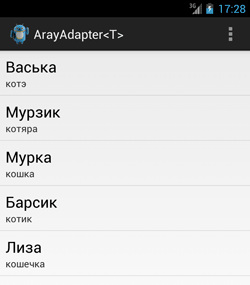

/* Моя кошка замечательно разбирается в программировании. Стоит мне объяснить проблему ей - и все становится ясно. */
John Robbins, Debugging Applications, Microsoft Press, 2000

/* Моя кошка замечательно разбирается в программировании. Стоит мне объяснить проблему ей - и все становится ясно. */
John Robbins, Debugging Applications, Microsoft Press, 2000
Создание адаптера
Используем ресурсы
Динамическое наполнение
ListAdapter
SpinnerAdapter
Переопределяем адаптер
ArrayAdapter является простейшим адаптером, который специально предназначен для работы с элементами списка типа ListView, Spinner и им подобным. Создать адаптер этого вида можно так:
// используется системная разметка
ArrayAdapter<String> adapter = new ArrayAdapter<String>(
this, android.R.layout.simple_list_item1, new string[]{"Рыжик", "Барсик", "Мурзик"});
В параметрах используется контекст, разметка и массив.
Разметку можно создать самостоятельно, а можно использовать готовую системную разметку. Если посмотреть на исходники файла simple_list_item_1.xml в документации Android SDK, то увидим, что он содержит TextView. В этом коде мы создали адаптер ArrayAdapter, в котором данные элемента TextView представлены в виде строк.
Чтобы код был более читаемым, можно сделать ещё так:
// определяем массив типа String
final String[] catnames = new String[] {
"Рыжик", "Барсик", "Мурзик"
};
ArrayAdapter<String> adapter = new ArrayAdapter<String>(this, R.layout.list_item, catnames);
lv.setAdapter(adapter);
Мы вынесли массив строк в отдельную переменную.
Если у нас есть готовый файл ресурсов (массив строк), то можно использовать специальный метод createFromResource(), который может создать ArrayAdapter из ресурсов:
Подготовим массив строк:
<string-array name="dayofweek">
<item>Понедельник</item>
<item>Вторник</item>
<item>Среда</item>
<item>Четверг</item>
<item>Котопятница</item>
<item>Субкота</item>
<item>Воскресенье</item>
</string-array>
Теперь мы можем воспользоваться адаптером и применим к Spinner:
Spinner spinner = (Spinner) findViewById(R.id.spinner1);
ArrayAdapter<CharSequence> adapter = ArrayAdapter.createFromResource(
this, R.array.dayofweek, android.R.layout.simple_spinner_item);
adapter.setDropDownViewResource(android.R.layout.simple_spinner_dropdown_item);
spinner.setAdapter(adapter);
При использовании этого метода вы можете применять локализованные версии, что очень удобно.
Или можно пойти другим путём. Получить массив из ресурсов и вставить его в адаптер, как в самом первом примере.
Spinner spinner = (Spinner) findViewById(R.id.spinner1);
final String[] daynames = getResources().getStringArray(
R.array.dayofweek);
ArrayAdapter<String> adapter = new ArrayAdapter<String>(this,
android.R.layout.simple_spinner_item, daynames);
adapter.setDropDownViewResource(android.R.layout.simple_spinner_dropdown_item);
spinner.setAdapter(adapter);
Также мы можем создать массив программно.
Spinner spinner = (Spinner) findViewById(R.id.spinner1);
List<String> catnames = new ArrayList<String>();
catnames.add("Барсик");
catnames.add("Мурзик");
catnames.add("Рыжик");
ArrayAdapter<String> adapter = new ArrayAdapter<String>(this,
android.R.layout.simple_spinner_item, catnames);
adapter.setDropDownViewResource(android.R.layout.simple_spinner_dropdown_item);
spinner.setAdapter(adapter);
ListAdapter является интерфейсом. По сути ничего не меняется. Заменяем ArrayAdapter<String> adapter на ListAdapter adapter и получаем тот же результат.
ListView lvDayOfWeek = (ListView)findViewById(R.id.listView1);
final String[] daynames = getResources().getStringArray(
R.array.dayofweek); // массив строк мы определили в ресурсах ранее
ListAdapter listadapter = new ArrayAdapter<String>(
this,
android.R.layout.simple_list_item_1, daynames);
lvDayOfWeek.setAdapter(listadapter);
Данный интерфейс может пригодиться при создании собственного адаптера, а для стандартных случаев выгоды не вижу.
SpinnerAdapter также является интерфейсом и может использоваться при создании собственных адаптеров на основе ArrayAdapter. В стандартных ситуациях смысла использования его нет. Вот так будет выглядеть код:
final String[] daynames = getResources().getStringArray(
R.array.dayofweek); // массив строк мы определили в ресурсах ранее
Spinner spinner = (Spinner) findViewById(R.id.spinner1);
SpinnerAdapter spinneradapter = new ArrayAdapter<String>(this,
android.R.layout.simple_spinner_item, daynames);
((ArrayAdapter<String>) spinneradapter).setDropDownViewResource(android.R.layout.simple_spinner_dropdown_item);
spinner.setAdapter(spinneradapter);
По умолчанию ArrayAdapter использует метод toString() из объекта массива, чтобы наполнять данными элемент TextView, размещённый внутри указанной разметки. Если вы используете ArrayAdapter<T>, где в параметре <T> используется ваш собственный класс, а не String, то можно переопределить метод toString() в вашем классе. Пример такого решения есть в конце статьи Android: Простейшая база данных. Часть вторая.
Другой способ. Если вам нужно изменить разметку, применяемую для отображения каждого представления, то можно наследоваться от класса ArrayAdapter, указывая конкретный тип и переопределяя метод getView(), чтобы установить свойства объекта для компонента из разметки.
Метод getView() используется для создания и наполнения данными компонента, отображаемого внутри родительского элемента AdapterView (например, ListView), который был привязан к исходному массиву с помощью этого адаптера.
Метод getView() принимает следующие параметры: позицию элемента, на какой он будет выведен, компонент, который обновляется (или null), а также объект ViewGroup, где новый компонент поместится. Вызов метода getItem() вернёт значение из исходного массива по указанному индексу. В результате метод getView() должен вернуть экземпляр представления, наполненный данными.
Допустим, у нас есть класс Cat с двумя полями - имя и пол. У списка есть специальная разметка, состоящая из двух текстовых полей. Создадим адаптер, который будет использовать класс Cat вместо String и будем извлекать данные из объекта класса.
package ru.alexanderklimov.test;
import ...
public class MainActivity extends ListActivity {
private static final List<Cat> cats = new ArrayList<Cat>();
static {
cats.add(new Cat("Васька", "котэ"));
cats.add(new Cat("Мурзик", "котяра"));
cats.add(new Cat("Мурка", "кошка"));
cats.add(new Cat("Барсик", "котик"));
cats.add(new Cat("Лиза", "кошечка"));
}
@Override
protected void onCreate(Bundle savedInstanceState) {
super.onCreate(savedInstanceState);
ListAdapter adapter = new CatAdapter(this);
setListAdapter(adapter);
}
private static class Cat {
public final String name;
public final String gender;
public Cat(String name, String gender) {
this.name = name;
this.gender = gender;
}
}
private class CatAdapter extends ArrayAdapter<Cat> {
public CatAdapter(Context context) {
super(context, android.R.layout.simple_list_item_2, cats);
}
@Override
public View getView(int position, View convertView, ViewGroup parent) {
Cat cat = getItem(position);
if (convertView == null) {
convertView = LayoutInflater.from(getContext())
.inflate(android.R.layout.simple_list_item_2, null);
}
((TextView) convertView.findViewById(android.R.id.text1))
.setText(cat.name);
((TextView) convertView.findViewById(android.R.id.text2))
.setText(cat.gender);
return convertView;
}
}
}

Как видите, достаточно просто видоизменить программу, используя класс вместо String.
В методе getView() используется не совсем корректная версия метода inflate(). Подробнее об этом читайте в статье LayoutInflater
Класс ArrayAdapter позволяет динамически изменять данные. Метод add() добавляет в конец массива новое значение. Метод insert() добавляет новое значение в указанную позицию массива. Метод remove() удаляет объект из массива. Метод sort() сортирует массив. После него нужно вызвать метод notifyDataSetChanged.
Создание собственного адаптера для списка задач